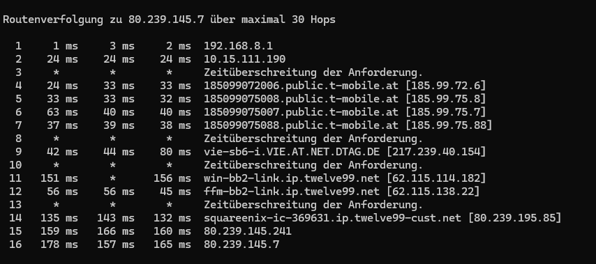
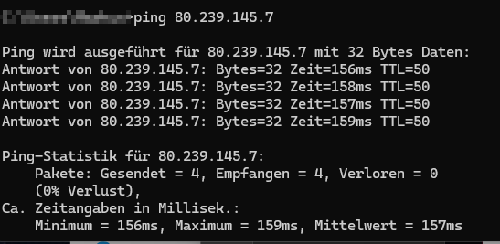

Hallo, seit gestern haben wir massiv Probleme in Final Fantasy 14.
Nachdem ich einiges überprüft habe, haben wir festgestellt, dass wir einen Ping vopn 220ms haben, und damit das Spiel nicht wirklich spielbar ist.
Tracert im Anhang.
Ich habe einen MagentaZuhause XL 175Mbit Tarif.
Normale Speedchecks und auch eine Ping eines WOW Servers brachten Pings von 10-20 ms.
Bis gestern war alles in Ordnung.
Hi @NoMatter
Der Tarifbezeichnung nach dürftest du Kunde der Telekom Deutschland sein.
Dies ist jedoch was Forum von Magenta Telekom Österreich.
Dies wäre das Forum der Telekom Deutschland:
https://telekomhilft.telekom.de/
LG NTM
Hallo,
hab auch seit einiger Zeit Probleme in FF14.
In anderen Spielen hab ich das Problem so nicht.
Tracert und Ping sind katastrophal.
Anderen APN oder Modem habe ich auch schon getestet.
Hotspot mit Handy hat besseren Ping und kein Lag
Mein Tarif Internet 5G M mit 250Mbit/50Mbit


Ich hänge mich gleich dazu - seit mehreren Monaten laggt es. Das Problem ist auch schon seit Jahren bekannt bei Magenta (Threads aus 2022, 2023...) gibt es eine Lösung oder muss hier anscheinend wirklich der Anbieter gewechselt werden.
LG
Bearbeitet von Thomas R
Am 21.6.2024 um 08:07 schrieb Thomas R:Ich hänge mich gleich dazu - seit mehreren Monaten laggt es. Das Problem ist auch schon seit Jahren bekannt bei Magenta (Threads aus 2022, 2023...) gibt es eine Lösung oder muss hier anscheinend wirklich der Anbieter gewechselt werden.
LG
Also wenn das Problem nur bei diesem Game auftritt und sonst nicht, würde ich mal davon ausgehen, dass die Game-Server Probleme haben und nicht der Anbieter. Wäre es ein allgemeines Problem, hättest du bei jeden Game einen höheren Ping. Frage mal beim Support von deinem Online Game nach, ob sich da was machen lässt.
Grüße, Dieter
Hallo Dieter,
das war auch meine erste Intention, aber Freunde in der gleichen Umgebung haben diesen Issue nicht. Interessanterweise laggt es nicht, wenn man mit dem mobilen Hotspot vom Handy verbunden ist. Die Erfahrung hat auch ein anderer User gemacht, bzw. gibt es in anderen Threads User die nach einem Wechsel zu anderen Anbietern keine Probleme mehr hatten. Was ich auch ab und an sehe, ist dass die Internet Verbindung ab und an verschwindet und dann wieder neu aufgebaut wird. Ich gehe daher definitiv von einem Anbieter Problem aus.
Danke für deine Rückmeldung
Hallo,
Das Problem besteht nur mit Magenta. Ich habe mir Testweise VPN zugelegt und mit diesem habe ich das Problem nicht.
Auch mit einem Hotspot vom Handy funktionierts ohne Probleme (Getestet mit A1 und Yesss)
Anscheinend gibt es in dem Forum auch keine Solution für das Problem, außer das man den Anbieter wechselt.
Am 12.6.2024 um 21:12 schrieb Mrbrodi:Hallo,
hab auch seit einiger Zeit Probleme in FF14.
In anderen Spielen hab ich das Problem so nicht.
Tracert und Ping sind katastrophal.
Anderen APN oder Modem habe ich auch schon getestet.
Hotspot mit Handy hat besseren Ping und kein Lag
Mein Tarif Internet 5G M mit 250Mbit/50Mbit
Ich habe denselben Tarif wie Sie, und alles lädt bei mir sehr schnell. Ich spiele ohne Probleme. Websites und Browsergames laden sogar schneller, als ich erwartet habe. Früher hatte ich einen anderen Anbieter, und der war schrecklich. Ich lese oft über Casino-Empfehlungen auf gamblizard.de/blog/ und andere Tipps, aber damals musste ich ständig fünf Sekunden warten, bis eine Seite geladen war. Mit Magenta habe ich solche Probleme vergessen. Wenn Sie nur bei einem Spiel Schwierigkeiten haben, wenden Sie sich am besten an den Support oder lesen Sie die aktuellen News – vielleicht haben die Entwickler selbst bereits gemeldet, dass es Probleme mit dem Spiel gibt.
Na ja, welche Fragen können dann noch offen sein, wenn das Problem nur bei einem Spiel mit dem Ping liegt? Ich habe es so verstanden, dass der Autor auch nur bei einem einzigen Spiel Schwierigkeiten hat. Ich verstehe die Beschwerden über Magenta nicht.
{kind=link}
{kind=link}
{kind=link}